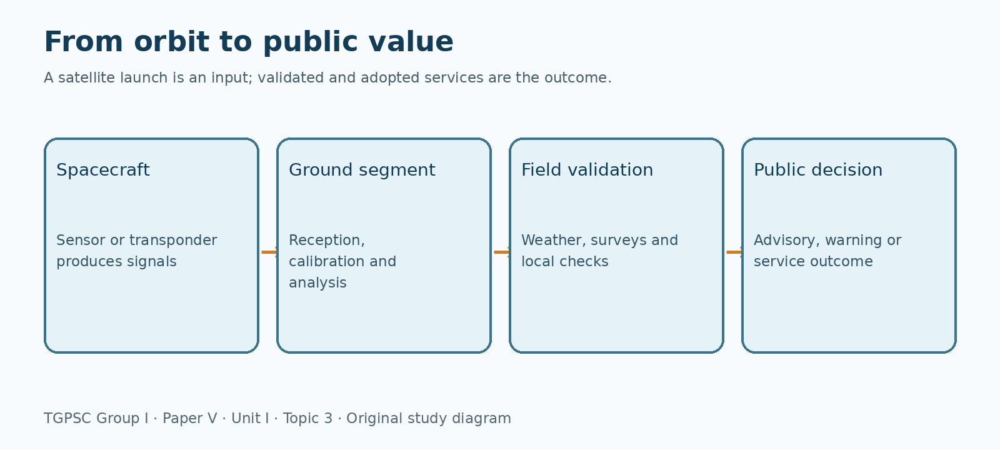
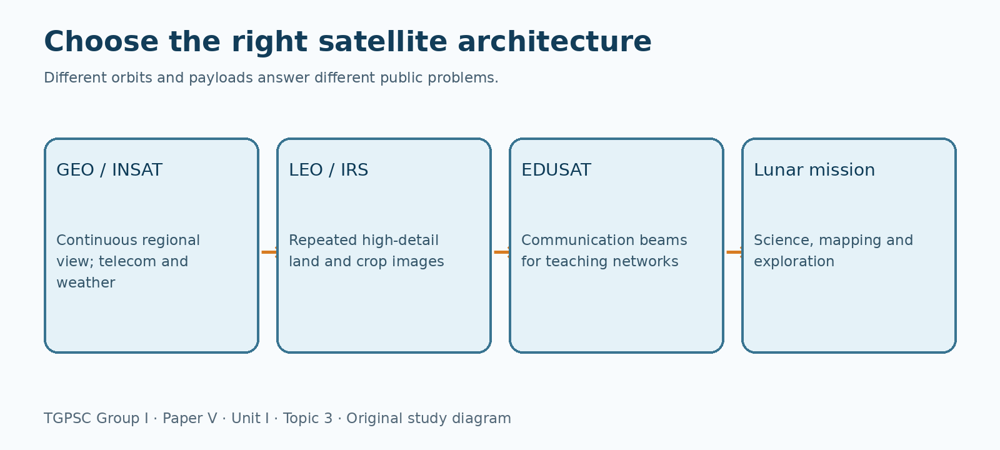
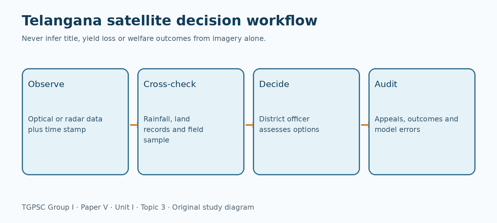

← Back to the 75-topic portal · Full PDF · Editable source
TGPSC Group I · Paper V · Unit I · Topic 3 · English · 24 October 2026 · Learning draft / NOT academically approved
The commission-hosted Group I Scheme and Syllabus specifies Paper V, Section I, Item 3 as follows (original wording preserved): “Space program in India and its applications with special reference to industrial, agricultural and other rural development activities, INSAT, IRS systems, EDUSAT and Chandrayaan-1 and future programme.” [S01] This syllabus is associated with the Group I recruitment under Notification No. 02/2024; the scheme-and-syllabus PDF is an official commission document, not a privately rewritten syllabus. Item 4 separately addresses applications to education, agriculture, industry and disaster management; this chapter discusses applications needed to explain Item 3 without claiming to replace the separate Item 4 chapter.
| Official examinable component | Detailed coverage | Answer-writing emphasis |
|---|---|---|
| Space programme in India | Sections 1–2, 12–13, 16 | Institutions, chronology, public-value chain, reforms and future missions |
| Industrial applications | Sections 9, 12, 14 | Satellite services, supplier ecosystem, Telangana examples and limitations |
| Agricultural applications | Sections 4, 7, 14 | Optical versus radar, crop area, moisture, field validation |
| Other rural development | Sections 5, 8, 10, 11, 14 | Tanks, watershed, education, connectivity, navigation and disasters |
| INSAT | Section 3 | Communications, weather, data relay, limitations |
| IRS | Section 4 | Sensor principles, classification, resource information |
| EDUSAT | Section 5 | Launch, educational service architecture, evaluation |
| Chandrayaan-1 | Section 6 | Timeline, science, water evidence and limitations |
| Future programme | Sections 13 and 16 | Gaganyaan tests, SPADEX, NISAR, status distinctions |
Academic status: Published learning draft; not independently approved. All practice MCQs and mains prompts below are original; they are not represented as official previous-year questions. Dated developments are current only to 24 October 2026. The source register identifies official records and the precise verification limitations.
India's space programme was conceived not simply as a contest to place hardware in orbit but as a way to solve problems of communication, weather, natural-resource knowledge and public administration. Its early institutional roots include INCOSPAR (1962), the Thumba Equatorial Rocket Launching Station, ISRO (1969), and the Department of Space and Space Commission (1972). The Satellite Instructional Television Experiment of 1975–76 showed that communication satellites could deliver educational programming to villages, while the 1975 Aryabhata satellite established experience in spacecraft engineering. The sequence matters: experimentation preceded an operational architecture, and the architecture then became a public-service system. It is misleading to evaluate all missions by launch counts alone. An effective programme must connect payloads, ground infrastructure, trained personnel, application departments and users who can act on the resulting information. [S02][S03]
ISRO designs and operates space systems and develops technologies; the Department of Space frames overarching public responsibilities; its centres specialise in launch vehicles, spacecraft, propulsion, applications and data processing. Vikram Sarabhai Space Centre and Satish Dhawan Space Centre are important for launch systems, U R Rao Satellite Centre for spacecraft, Space Applications Centre for payloads and applications, National Remote Sensing Centre (NRSC) in Hyderabad for receiving, processing and disseminating Earth-observation data, and ISTRAC for tracking and mission operations. The National Space Promotion and Authorisation Centre (IN-SPACe) enables and authorises non-government space activity under the policy framework, while NewSpace India Limited (NSIL) handles commercial and industrial interfaces. These roles overlap at programme boundaries but should not be treated as interchangeable agencies. [S04][S05]
Consider a Telangana drought-monitoring programme. A satellite measures reflected energy or radar backscatter; NRSC and specialist analysts convert measurements into a georeferenced product; state agriculture or water departments combine it with field measurements; local officials decide when to issue advisories or allocate resources. If any link fails, the imagery may remain scientifically sound but administratively useless. Spatial resolution determines how small an object can be distinguished, temporal resolution how frequently the scene is revisited, spectral resolution how finely wavelengths are separated, and radiometric resolution how small a signal difference is detectable. Satellite observations supplement rather than automatically replace field surveys. [S06]
The developmental perspective emphasises reduced information costs, early warnings, inclusion and industrial spillovers. A competing perspective warns that remote observations can conceal tenancy, informal settlements, caste-related exclusion or water-access conflicts. Satellites can map cropped land but cannot directly determine who controls its income. A responsible answer therefore distinguishes technical capability, validated product, government adoption and measurable welfare outcome. This four-step test is relevant to every application in this chapter.
A geostationary satellite appears fixed over one longitude because its orbital period matches Earth's rotation and it travels in the equatorial plane at roughly 35,786 km altitude. This geometry is useful for continuous television, telecommunications and weather observation of a broad region, but the long distance creates propagation delay and high-latitude viewing limitations. A polar or sun-synchronous low-Earth orbit provides repeated, comparatively detailed observations of land and oceans; it cannot view one farm continuously. Low-Earth constellations can reduce communication latency but need many satellites and sophisticated handovers. Geosynchronous is a wider category: not every geosynchronous orbit is geostationary.
A spacecraft bus supplies electrical power, thermal control, attitude control, propulsion, telemetry and command. Its payload performs the mission: a communication transponder receives and retransmits signals; an optical imager measures reflected or emitted electromagnetic radiation; a microwave radar actively illuminates a target and measures return signals; a navigation payload broadcasts precisely timed ranging signals. Ground stations receive data and commands, but the service also requires processing, calibration, quality control, user access and sometimes legal authorisation. An imaging satellite is not equivalent to a weather forecast: forecasting additionally requires models, assimilation and meteorological expertise.
The Polar Satellite Launch Vehicle (PSLV) is a versatile multi-stage launcher associated with Earth-observation and interplanetary missions. The Geosynchronous Satellite Launch Vehicle (GSLV) uses cryogenic upper-stage technology to serve heavier geosynchronous-transfer requirements; LVM3 has greater lift capability and launched Chandrayaan-3. The Small Satellite Launch Vehicle (SSLV) targets smaller payloads and responsive launches. A launch vehicle's lift depends on destination orbit: 'payload to LEO' and 'payload to GTO' are not comparable numbers. Rockets are transport infrastructure, while satellites and their data systems deliver services. Launch reliability must be evaluated with successes and failures, not promotional totals. ISRO's 2025–26 achievements record explicitly noted two PSLV failures under expert review. [S07]
For continuous cyclone-cloud observation choose geostationary meteorological imaging; for detailed seasonal crop mapping choose suitable polar Earth-observation missions; for navigation choose a constellation with clock and ranging services. The common error is to assume that all satellites are INSAT, or that all Earth observation requires visible light. Radar can observe at night and through many cloud conditions, although its interpretation requires expertise.
INSAT means Indian National Satellite System, a multi-purpose family rather than one spacecraft. Historically it brought telecommunications, television distribution, meteorological observations, data relay and search-and-rescue functions into a coordinated national service architecture. The distinction between an INSAT system and a specific spacecraft matters: INSAT-1B, INSAT-3D and INSAT-3DS differ in generation, payload and purpose. Transponders receive an uplink, translate or process the signal and deliver a downlink over a footprint. This permits broadcasting to dispersed receivers and connectivity to locations where terrestrial infrastructure is difficult, but usable service still needs terminals, spectrum coordination and power at the endpoint. [S08]
The INSAT-3D family uses multispectral imaging and atmospheric sounding to observe clouds, water vapour and vertical atmospheric profiles. INSAT-3DS, launched in February 2024, was designed to maintain and enhance weather-observation services with a six-channel imager, nineteen-channel sounder, data-relay transponder and satellite-aided search-and-rescue transponder. A sounder estimates vertical temperature and humidity structure; an imager maps spatial cloud and surface features. Data relay can collect readings from automatic weather stations, but a raw satellite picture is not a district rainfall forecast. Forecast skill depends on numerical models, ground observations and interpretation. [S09]
A cyclone warning chain includes satellite monitoring, numerical prediction, India Meteorological Department analysis, state disaster-management communication and local evacuation decisions. Satellite continuity improves situational awareness, but siren coverage, accessibility for persons with disabilities and trusted local communication decide whether a warning saves lives. For Telangana, weather monitoring can assist intense-rainfall assessment, reservoir management and agricultural advisories; a geostationary imager is not a substitute for local rain gauges or catchment hydrology.
Satellite broadcasting can expand educational or health communication, yet one-way transmission may fail to create learning or clinical access. Spectrum interference, transponder capacity, ground-terminal costs and institutional coordination constrain outcomes. Evaluate INSAT using availability, coverage, warning lead time and actual user response—not by the number of satellites alone. A strong mains answer explains the payload-to-public-service chain and specifies who acts on the information.
The Indian Remote Sensing (IRS) programme developed national capacity for repeated observation of land, vegetation, water and settlements. The first operational IRS-1A was launched in 1988. The broader Earth-observation family later included Resourcesat, Cartosat, Oceansat, RISAT and other mission lines with distinct sensors. 'IRS' is a programme label, not a promise that every satellite has identical spectral bands, orbit or resolution. Passive optical instruments measure reflected solar energy and often face cloud interference; thermal instruments sense emitted radiation; active radar transmits microwave pulses and receives their echoes. [S10]
A vegetation index such as NDVI is a normalized contrast between near-infrared and red reflectance: (NIR − Red)/(NIR + Red). Healthy vegetation commonly absorbs more red and reflects more near-infrared light. However, a high NDVI does not uniquely identify crop type, yield, farmer income or irrigation source. Atmospheric effects, mixed pixels, soil background, crop stage and sensor geometry influence the result. Classification accuracy should be reported with field validation and a confusion matrix, rather than claiming perfect maps. A land-use map from 2022 cannot be assumed to describe 2026 conditions without new observation.
Earth-observation operations typically proceed through image acquisition, geometric correction, radiometric calibration, cloud masking, feature extraction, classification, validation and publication. Geometric correction aligns pixels to geographic coordinates; calibration makes measurements comparable across time; field samples help determine whether an algorithm is confusing crops with natural vegetation. Spatial aggregation introduces scale problems: a district-average moisture signal may hide severe stress in particular mandals. Good policy also combines remote sensing with land records and farmer surveys while recognising that ownership and occupancy cannot be read directly from spectral reflectance.
NRSC in Hyderabad and its national platforms are especially relevant to Telangana exam answers. Satellite-based tank inventory, crop-area assessment, urban expansion mapping and groundwater-recharge planning can support state departments. A practical decision may compare satellite-derived tank water spread before and after monsoon with rainfall records and field inspections. The map is evidence about surface extent, not proof of desiltation quality or equitable water distribution. Explain these distinctions to show administrative understanding rather than technological enthusiasm alone. [S06]
GSAT-3, called EDUSAT, was launched on 20 September 2004 by GSLV-F01 as India's first dedicated educational satellite. It was a geosynchronous communications spacecraft designed to support distance classroom education through regional and national beams and two-way satellite links. Its role should not be confused with a contemporary internet-learning application: EDUSAT supplied a communications layer, while states and institutions had to supply teachers, curricula, studios, classroom terminals and assessment systems. The mission's stated minimum life was seven years; it should not be presented as an active 2026 spacecraft. [S11]
A central studio creates lessons and transmits content to a hub; the satellite distributes the signal to remote classrooms. Two-way terminals allow questions and interaction, while one-way reception can reach larger audiences at lower equipment cost. Educational value depends on schedule fit, local-language pedagogy, electricity, trained facilitators and the ability to provide feedback. The presence of a television set does not establish learning gains. A classroom may receive high-quality content but fail if the broadcast does not align with examination levels or if students cannot ask questions.
In remote tribal and rural locations, satellite education can reduce travel and help distribute teacher-training or specialised instruction. It can also serve adult literacy, agricultural extension and health awareness. However, terrestrial broadband and mobile networks may now be cheaper or more interactive in many areas. The correct comparison is not 'satellite versus no education' but satellite delivery, terrestrial networks, downloadable content and blended local teaching under the same learning objectives. A resilient system may use satellite broadcast for common content and local teachers for contextual explanation.
EDUSAT illustrates the distinction between a technological demonstration and a sustainable service. Evaluate enrolment reach, regular attendance, comprehension, cost per learner, language inclusion and maintenance. A Telangana case study could examine remote schools where specialist science lessons are scarce; any claim of improved pass rates must be based on actual evaluation, not assumed from satellite availability. This institutional lesson is examinable because space applications succeed when service design accompanies engineering.
Chandrayaan-1 launched on 22 October 2008 aboard PSLV-C11. It entered lunar orbit, initially conducting observations near 100 km altitude, and carried eleven scientific instruments developed by Indian and international partners. The payload set included mapping cameras, spectroscopy, radar and the Moon Impact Probe. The mission studied chemical composition, minerals, topography and the lunar environment. Contact was lost on 29 August 2009 after more than 3,400 lunar orbits, before its original two-year design life. The shorter operation did not erase the mission's major scientific contributions; nor should one claim it completed every originally planned year of operations. [S12]
Chandrayaan-1's Moon Mineralogy Mapper and other instruments provided important evidence for hydroxyl and water-related signatures on the lunar surface. Spectroscopy identifies characteristic absorption patterns, not underground lakes visible to the naked eye. The Moon Impact Probe and subsequent analyses contributed to the broader evidence base. 'Water molecules detected' is different from 'large accessible deposits confirmed' and different again from 'commercial extraction is feasible'. A future lunar-resource programme would require concentration estimates, location, extraction energy, engineering reliability and international legal analysis. ISRO's parliamentary responses identify confirmation of water/hydroxyl signatures among Chandrayaan-1 achievements. [S13]
Lunar navigation requires tracking, orbit determination, communication over large distances and mission planning beyond low-Earth orbit. India's Deep Space Network infrastructure and experience with precision orbit manoeuvres became reusable capabilities. The mission also demonstrated international scientific cooperation: shared instruments generated data that scientists could independently analyse. These benefits should be separated from the direct economic impact of a crop-monitoring satellite. Chandrayaan-1 was primarily exploration and technology development; its value includes scientific knowledge, training and long-term capability.
Chandrayaan-2 (2019) placed an orbiter successfully while its lander did not achieve the intended soft landing. Chandrayaan-3 launched in July 2023 and achieved a soft landing on 23 August 2023; its lander and rover performed in-situ measurements. The sequence is not a simple 'success versus failure' binary: different mission components had different outcomes. Chandrayaan-1 mapped from orbit; Chandrayaan-3 demonstrated landing and local measurements. An examiner may ask for these contrasting mission objectives, not merely dates. [S14]
Agricultural remote sensing can estimate cropped area, crop phenology, vegetation vigour, inundation, evapotranspiration proxies and surface soil moisture. A satellite generally does not measure actual harvested yield directly. Yield estimation combines remotely sensed signals with weather, crop models, sampling and official agricultural statistics. The FASAL framework uses space, agrometeorology and ground inputs for crop forecasting; such products need validation by crop and region. Early acreage estimates may be revised as better observations arrive. This distinction is vital in examination answers because an impressive image is not an audited production figure.
Optical sensors capture reflected radiation but may miss crucial monsoon dates under persistent cloud. Synthetic aperture radar (SAR) transmits microwave energy, so it can provide observations at night and through many cloud conditions. Radar backscatter depends on soil moisture, surface roughness, crop structure and viewing geometry; it is not a simple direct moisture gauge. NISAR, launched 30 July 2025, uses NASA L-band and ISRO S-band radar. ISRO announced in February 2026 a demonstration of 100-metre soil-moisture products derived from NISAR observations. A demonstrated product is not automatically a fully operational, error-free irrigation recommendation for every Telangana village. [S15][S16]
Consider rainfed cotton and pulses in a semi-arid Telangana mandal. Repeated satellite observations flag vegetation stress; automatic weather-station data distinguish rainfall deficit from heat; soil and field visits assess pests, sowing date and local management; extension staff then communicate an advisory. A low vegetation index could arise from late sowing rather than drought. Farmers may lack capacity to change crops after investment, so a useful advisory must arrive before the decision deadline and specify feasible action. Satellite data can improve the timing of field inspections but cannot substitute for credit, crop insurance or access to markets.
Insurance claim systems and crop-damage assessment should publish uncertainty, allow appeals and avoid treating satellite classification as unchallengeable proof. Tenant farmers may cultivate land not recorded in their names. Satellite data can verify cultivation patterns but not legal entitlement to compensation. An equitable programme links maps to transparent beneficiary records, local grievance redress and independent sampling. Evaluate benefits through forecast error, advisory uptake, reduction in input waste and farmer outcomes—not number of images processed.
Satellite imagery can estimate tank water spread, seasonal reservoir extent and land-cover change around catchments. In Telangana, traditional tanks form interconnected hydrological systems: upstream land use, siltation, feeder channels and downstream withdrawals influence the result. A larger water spread after rainfall does not alone prove increased storage capacity; water depth, bathymetry and timing matter. A tank inventory may prioritise inspection, while engineering surveys decide repair. Spatial layers are especially useful for identifying encroachment trends, but any enforcement requires legal verification of boundaries and due process.
Earth-observation data can reveal land cover, drainage, fractures and vegetation indicators relevant to groundwater recharge. It cannot directly observe the depth or ownership of every aquifer. Groundwater-level monitoring wells, pumping records, geology and rainfall remain essential. Watershed planning can combine slope, soils, drainage and settlement layers to identify possible check-dam or contour-treatment locations; a site still needs ecological and engineering appraisal. Remote sensing is strongest when it narrows costly field investigation, not when it claims to replace it.
Satellite imagery helps plan roads, identify isolated habitations and monitor land-use changes. Navigation supports logistics and emergency response, while communication satellites can provide backhaul where terrestrial fibre is unavailable. The economic case differs by settlement density: satellite links may be justified for remote habitations but expensive for densely served corridors. Policy must compare life-cycle costs, service uptime, terrain, electricity and digital skills. A map of 'unconnected villages' can become outdated quickly, so a rural infrastructure dashboard needs an update protocol.
Mapping can expose resource stress yet create new disputes if maps are used without public consultation. Tribal forest use, customary paths, seasonal grazing and common property resources may be poorly represented by a land-cover classifier. A land pixel labelled 'scrub' can still have substantial livelihood value. Developmental use therefore requires participatory ground truthing, privacy safeguards and transparent administrative reasoning. The best examination conclusion is conditional: space data improve evidence quality, while institutions determine fairness and implementation.
Space programmes support industry in two distinct ways. First, satellites provide services—communications, navigation, Earth observation and precise timing—that businesses use for supply chains, ports, transport, insurance and infrastructure planning. Second, spacecraft and launch-vehicle manufacture create demand for precision engineering, composites, electronics, software, sensors, testing and quality systems. The second pathway can develop suppliers beyond the space sector, but it is not automatic: certification costs, order continuity, intellectual-property arrangements and skill availability affect spillovers.
An industrial corridor can use multispectral imagery to map land conversion and heat islands, radar interferometry to monitor deformation near infrastructure, and navigation to track fleets. Each application has limits. Satellite deformation signals may be affected by atmospheric noise and require specialist processing. A route optimiser still needs road restrictions and real-time traffic; a navigation coordinate alone does not determine safe delivery. Industrial environmental monitoring may identify suspicious land-cover or thermal changes, but regulatory conclusions require on-site measurement and lawful inspection.
Hyderabad's NRSC, aerospace suppliers, electronics ecosystem and geospatial firms create an unusually direct link between space technology and regional industrial capability. A Telangana case could trace an NRSC-derived flood-risk layer into an industrial-park location decision, or satellite timing and navigation into logistics efficiency. Such examples should be labelled illustrative unless an official evaluation identifies a named project and quantified result. A credible industrial policy answer examines procurement transparency, local supplier development, training, open data and the opportunity cost of subsidies.
A mission can increase scientific capacity without immediately raising industrial employment. Evaluate contracts placed with domestic firms, export readiness, reliability, cost per service unit and diffusion to non-space manufacturers. Industrialisation requires finance, demand, standards and skilled labour; satellite infrastructure is one input. The analytical mistake is to attribute every downstream digital-service job to a particular rocket launch.
Satellite navigation receivers estimate distance from several satellites by measuring the travel time of coded radio signals and solving for position and receiver-clock offset. The speed of light turns tiny timing errors into substantial distance errors. Geometry, atmospheric delays, multipath reflections and signal blockage affect accuracy. A receiver needs multiple suitable satellite signals; a satellite does not 'see' and directly track every user. Navigation and communication are different services, though they may be integrated in the same device.
Navigation with Indian Constellation (NavIC), also known as IRNSS, is India's regional satellite navigation system. Its design provides positioning services over India and surrounding areas, complementing global systems such as GPS. Its regional focus differs from a worldwide constellation; the constellation's operational availability and receiver support must be checked at the date of use. Services include civilian standard positioning and restricted services under defined authorisations. A policy answer should explain strategic autonomy and interoperability rather than suggesting that all foreign navigation signals have been replaced.
Agricultural machinery can use positioning to reduce overlap; ambulance routing can improve dispatch; fishing vessels and disaster teams can navigate in difficult conditions; fleet management combines coordinates with communications and software. However, navigation alone does not establish land ownership, guarantee driver safety or prove that an emergency vehicle arrived on time. Precise timing can also support synchronisation in telecom and infrastructure systems. The public value depends on devices, maps, network access and accountable operators.
Signal jamming, spoofing, device incompatibility, poor indoor reception and data privacy are practical constraints. A district disaster-response system should not rely on one positioning source; it needs fallback procedures, offline maps and training. Space-based navigation is therefore both a technological capability and a resilience problem.
Space services can assist mitigation, preparedness, response and recovery. Before a flood, land-use and elevation layers support exposure mapping; during heavy rainfall, weather satellites and radar help monitor evolving conditions; after inundation, optical or SAR imagery can estimate affected areas and guide field verification. A satellite cannot by itself forecast the exact breach of an embankment or identify all trapped persons. Flood modelling needs river gauges, rainfall, terrain, reservoir operation and local reports. For drought, vegetation and moisture anomalies require agricultural and groundwater context.
An operational chain involves ISRO/NRSC products, IMD weather forecasts, Central Water Commission hydrology where relevant, NDMA guidance, Telangana disaster-management authorities, district collectors and first responders. Warning thresholds must be explicit and messages understandable to residents. An alert sent after roads are cut may have little value. Satellite coverage improves information, but accountability rests with officials who order evacuations, maintain shelters and communicate with vulnerable groups.
A Hyderabad rainfall event may generate rapid runoff from impervious surfaces and overwhelmed drainage. Satellite imagery can map pre-existing lakes and urban expansion; geostationary weather data can show cloud development; SAR may support post-event flood extent mapping. Yet the most urgent street-level decisions depend on rainfall intensity, stormwater network capacity, blocked culverts and field observations. An examiner should be shown the difference between regional situational awareness and hyperlocal hydraulic forecasting.
Flood maps can under-detect water beneath vegetation or inside buildings, and revisit timing can miss peak extent. Products should report acquisition time and confidence, and should not be treated as proof that a household was unaffected. Fair compensation requires field verification and appeals. This is why the satellite-to-decision diagram in this chapter includes an explicit ground-validation step.
Many space services generate public benefits that private users cannot fully capture: weather warnings, baseline mapping, research data and disaster information. These can justify public investment. Other activities—launch services, satellite manufacturing, commercial imagery and connectivity—may support competitive markets. A mature policy must distinguish strategic public infrastructure from services that private firms can provide. India's 2023 Space Policy outlines responsibilities for government bodies and non-government entities, including the facilitation and authorisation role of IN-SPACe. [S04]
Commercial participation can widen innovation, reduce procurement bottlenecks and create specialised products, but authorisation, spectrum coordination, orbital debris mitigation, cybersecurity and liability are essential. An operator may be technically capable of launching a satellite but still need authorisation and coordination to operate safely. Industrial policy should not confuse registration of startups with successful deployment or revenue. NSIL's commercial role and IN-SPACe's authorisation role should be explained separately.
Open Earth-observation data can lower costs for researchers and state departments, while sensitive high-resolution imagery may require safeguards. Geospatial products can reveal private facilities or individual patterns when linked to other databases. Public agencies should use purpose limitation, access controls and data-retention policies. Algorithms trained in one agro-climatic region may perform poorly in another. Procurement should specify data accuracy, auditability and service continuity rather than accept vendor claims of universal precision.
The reform case rests on faster innovation, domestic capability and better services. The cautionary case highlights market concentration, public subsidy capture, unequal access and national-security risk. A strong conclusion proposes transparent authorisation, competitive procurement, independent evaluation and accessible public-interest datasets, with periodic review of outcomes.
A future programme is not one category. An operational service satellite delivers routine data; a technology demonstrator tests a capability; a science mission seeks knowledge; an announced concept may still lack final schedule or funding. Gaganyaan aims to establish human-spaceflight capability and requires crew safety, launch escape, life support, recovery and reliability demonstrations. ISRO reported an integrated air-drop test in April 2026, a parachute qualification test in July 2026 and Crew Module–Service Module separation tests on 16 October 2026. These are engineering milestones, not evidence that a crewed orbital flight has already occurred. [S17][S18][S19]
The SPADEX mission demonstrated docking and undocking in orbit, an enabling capability for future assembly, servicing and station operations. Demonstrating a docking manoeuvre does not mean a space station is already operational. Reusable launch systems and new propulsion technologies may reduce costs, but their economics depend on refurbishment, flight rate, safety and actual demand. India's future space-station and lunar ambitions should be discussed as announced roadmaps unless completion is independently confirmed. [S07]
NISAR, jointly developed with NASA, launched in July 2025 and entered its science phase later that year. Its L- and S-band radar observations offer applications in soil moisture, land deformation, forests and water. ISRO reported S-band product release on 24 July 2026, with processing and dissemination involving NRSC's Shadnagar infrastructure. Unlike a speculative mission, this is a launched and data-producing system; however, individual products still need validation for each policy use. [S20]
ISRO's official launch list records GSLV-F17/EOS-05 on 4 September 2026. Its 2025–26 report also documents the December 2025 BlueBird Block-2 commercial launch and the November 2025 CMS-03 mission. Do not conflate the mission's launch, transfer-orbit manoeuvres, commissioning and operational service. Likewise, a scheduled fourth-quarter 2026 mission should not be described as completed before confirmation. The exam reward lies in chronological precision and correct status labels. [S21]
Suppose a district must rank 100 tanks for inspection. Use multi-date water-spread maps to identify unusual seasonal shrinkage; combine rainfall, catchment area, feeder-channel condition and local water-demand data. Prioritise sites for field survey, not immediate capital expenditure. A tank with low spread may have experienced weak rainfall rather than structural damage. A decision memo should state uncertainty, maintenance history and downstream beneficiaries. Success is measured by improved storage service and fair distribution after intervention, not the number of polygons digitised.
A hailstorm or flood affects multiple mandals. Compare pre-event and post-event imagery, crop masks and meteorological observations; use SAR where clouds obstruct optical images; verify with stratified field samples. Publish an appeal mechanism for cultivators whose plots are misclassified. Tenant farmers require eligibility assessment independent of spectral imagery. A robust workflow records acquisition dates, model version, false-positive and false-negative rates, and how officers resolve disagreements. Satellite-assisted estimation can improve consistency, but must not become an unreviewable automated denial system.
Time-series land-cover data can show conversion of vegetated areas into built-up surfaces. Thermal observations may identify urban heat patterns, but surface temperature differs from the air temperature experienced by workers. Planners can overlay land-cover trends with public-transport access, stormwater infrastructure and vulnerable neighbourhoods. An industrial park should be evaluated for flood risk, water supply and ecological impacts, not simply mapped as available land. The policy recommendation is to integrate geospatial evidence into statutory planning with public scrutiny.
A tribal residential school lacks specialist instruction. Compare satellite-based broadcast, recorded digital content and terrestrial broadband under the same learning outcomes. Ensure a local facilitator, Telugu or relevant local-language support, accessible schedules and feedback channels. A satellite delivery network is justified when it offers resilient, affordable coverage; it is not inherently superior to terrestrial networks. Measure actual learning and attendance, not the number of transmitted lessons.
A remote-sensing product can have positional accuracy, thematic classification accuracy, temporal freshness and model uncertainty. A 10-metre pixel does not guarantee 10-metre boundary accuracy. Cloud cover can introduce missing data; a high overall classification accuracy can conceal very poor performance on a rare crop or flood class. In a confusion matrix, producer's accuracy and user's accuracy answer different questions: omission versus commission errors. Explain how independent ground samples and transparent metadata improve trust.
A state-level rainfall anomaly cannot establish one village's soil moisture; a satellite's revisit interval does not equal continuous observation. Combining sensors may improve coverage but introduces differences in calibration and resolution. 'Near-real-time' has an operational meaning only if acquisition, processing and delivery latency are reported. For an irrigation advisory, a 12-day observation interval may be insufficient without ground sensors or weather forecasts; for seasonal land-cover mapping, it may be adequate.
Distinguish launch date, operational commissioning, public data release and demonstrated policy outcome. Chandrayaan-1 was launched in 2008; Chandrayaan-3 soft-landed in 2023; NISAR launched in 2025 and released specific data products in 2026. The fact that a mission exists does not prove a named district has adopted its outputs. Similarly, India developing a capability does not establish that every component is domestically sourced. Qualify the evidence and avoid invented precision.
Begin with a one-sentence definition and the exact syllabus phrase. Explain the mechanism in a diagram or chain, then give one historical mission and one current example with dates. Discuss economic or social impact, limitations and institutional requirements. End with a balanced conclusion. Do not fill an answer with mission names without explaining how they produce developmental value. A thoughtful 220-word answer with a clear mechanism is stronger than a catalogue of fifteen satellites.
India built an interconnected system of launch vehicles, communication satellites, remote-sensing missions, navigation capability, scientific exploration and specialist ground infrastructure. INSAT made national communications and meteorological services possible; IRS and related Earth-observation missions improved resource information; EDUSAT demonstrated educational delivery; Chandrayaan-1 established lunar-science capability; subsequent missions advanced landing, radar observation and docking. The programme has created skills, institutions and industrial opportunities. The precise developmental impact of each application, however, must be measured rather than inferred from mission success.
District users need reliable, understandable products and trained analysts; smaller firms need access to data and transparent procurement; disaster managers need validated warning chains; farmers need timely advisories and fair grievance mechanisms. Cybersecurity, debris mitigation, data governance and service resilience matter as satellite fleets expand. Rural communities should participate in the design of tools that affect water allocation, insurance and land use. Public investment is most defensible when benefits are broadly shared and evaluated against alternative spending.
The Indian space programme is best understood as a layered public-development capability: scientific research and launch infrastructure enable satellites; satellites produce signals; ground systems turn signals into information; institutions convert information into services; citizens and enterprises realise benefits only when they can use those services. INSAT, IRS, EDUSAT and Chandrayaan-1 exemplify different layers and objectives, not interchangeable missions. For Telangana, NRSC's presence and the state's agricultural, water and urban challenges make the practical translation from observation to accountable decisions especially examinable. The next generation of progress depends as much on institutions, validation and equitable access as on more advanced spacecraft.
India's space programme joins research, launch capability, satellites, ground systems and public institutions. INSAT primarily represents communication and meteorological services; IRS represents Earth-observation capabilities; EDUSAT was a dedicated educational satellite launched in 2004; Chandrayaan-1 was a lunar-science orbiter launched in 2008. They are not alternative names for one technology. Their developmental impacts arise through service chains: satellite data → calibration → validation → user department → timely action → measured result. NRSC in Hyderabad is a crucial Telangana connection. For future programmes, distinguish launched and operational systems from demonstrations and plans. A balanced answer includes benefits, technical error, equity, institutional capacity and the status of the supporting evidence.
Suggested 10-mark answer blueprint: Definition and background (20–30 words); mechanism and named mission (60–70); application and Telangana case (60–70); limitations, institutional measures and conclusion (50–60). Include one accurate date and a labelled diagram where appropriate. Never assert a particular government outcome without a dated evaluation. For a comparison question, use a short table with orbit, payload, users and measurement of success.
| Confused pair | Correct distinction |
|---|---|
| GEO vs polar orbit | Continuous apparent regional view vs repeated detailed overpasses |
| Geosynchronous vs geostationary | Equal orbital period vs special circular equatorial case |
| INSAT vs IRS | Communication/weather system vs Earth-observation programme |
| Satellite image vs forecast | Measurement vs model-based prediction with other data |
| NDVI vs yield | Vegetation signal vs harvested production requiring calibration |
| Tank spread vs volume | Area of visible water vs area-depth relationship |
| Radar vs optical | Active microwave return vs reflected solar radiation |
| Launch vs operation | Reaching orbit vs commissioning and delivering validated service |
| Chandrayaan-1 vs Chandrayaan-3 | Orbital mapping vs successful landing and local rover experiments |
| IN-SPACe vs NSIL | Authorisation/facilitation vs commercial business functions |
Do not claim a satellite can identify a legal owner, a tenant, a confirmed crop yield or a household's compensation entitlement. Do not call EDUSAT a new 2026 satellite. Do not describe Chandrayaan-1 as a lunar lander. Do not treat the NISAR 100-metre soil-moisture demonstration as a universally proven irrigation service. Do not confuse satellite revisit interval with continuous imaging. Do not present an announced future mission as accomplished. Always pair the technological promise with validation and responsible institutions.

Figure 1. From orbit to public value: acquisition is only the first step.

Figure 2. Orbit and payload choices for different missions.

Figure 3. Ground truth and accountability in state applications.
Provenance: All questions below are newly authored practice items. No official TGPSC PYQ provenance is claimed.
A. ISRO 1969 → INCOSPAR 1962 → Department of Space 1972
B. INCOSPAR 1962 → ISRO 1969 → Department of Space 1972
C. Department of Space 1972 → ISRO 1969 → INCOSPAR 1962
D. EDUSAT 2004 → Aryabhata 1975 → IRS-1A 1988
Correct answer: B. INCOSPAR preceded ISRO, and the Department of Space followed in 1972. The chronology helps explain how scientific experimentation developed into an operational national programme; it is not a list of interchangeable institutions.
A. Polar sun-synchronous
B. Highly elliptical lunar
C. Equatorial geostationary
D. Interplanetary transfer
Correct answer: C. A geostationary satellite has an orbital period matching Earth’s rotation and remains apparently fixed over one longitude. Polar orbiters offer different advantages, especially repeated detailed Earth observation.
A. It is necessarily equatorial and circular
B. It is always closer to Earth
C. It can observe only at night
D. It never requires station-keeping
Correct answer: A. All geostationary satellites are geosynchronous, but a geosynchronous orbit can be inclined or elliptical. Only the appropriate circular equatorial configuration appears fixed in the sky.
A. Multispectral imager
B. Communication transponder
C. Altimeter for lunar mapping
D. Radar interferometer
Correct answer: B. A communication transponder receives an uplink and retransmits a downlink. It does not independently forecast weather or classify crops; those functions depend on different sensors and ground processing.
A. Lunar landing
B. Deep-space navigation
C. Meteorological observation and related relay services
D. Mars sample return
Correct answer: C. INSAT-3DS carries weather imaging, atmospheric sounding, data relay and search-and-rescue payloads. Its meteorological purpose should not be confused with INSAT’s broader historical telecommunications role.
A. One geostationary television satellite
B. A national Earth-observation programme with different sensors
C. A lunar sample-return system
D. A rocket engine family
Correct answer: B. The Indian Remote Sensing programme encompasses multiple generations and mission types. Different sensors and orbits serve agriculture, mapping, water and disaster applications; not every IRS-related satellite is identical.
A. Blue and thermal infrared
B. Near-infrared and red
C. Microwave and X-ray
D. Ultraviolet and gamma ray
Correct answer: B. NDVI equals (NIR minus red) divided by (NIR plus red). It is a vegetation indicator, not a direct measurement of yield, ownership or household income.
A. It cannot measure any vegetation
B. Cloud obstruction
C. It has no spatial coordinates
D. It cannot be calibrated
Correct answer: B. Dense clouds can prevent optical sensors from seeing the surface. Radar offers a complementary approach, but radar backscatter itself requires calibration and interpretation.
A. It measures only visible sunlight
B. It is an active microwave system
C. It requires a clear sky at noon
D. It reads land records from orbit
Correct answer: B. Synthetic aperture radar actively sends microwave signals and measures returns. Many clouds do not block those frequencies, but the return varies with moisture, geometry, roughness and crop structure.
A. It was India’s first dedicated educational satellite, launched in 2004
B. It is the 2026 operational lunar orbiter
C. It replaced every rural teacher
D. It was launched on Chandrayaan-1
Correct answer: A. GSAT-3/EDUSAT launched on 20 September 2004. It enabled educational communication links, but actual learning required curricula, facilitators, equipment and feedback.
A. Count only the satellite transponders
B. Count only broadcasts sent
C. Measure learning outcomes, attendance and cost per learner
D. Assume every received lesson was understood
Correct answer: C. Educational value is an outcome, not a signal strength metric. Evaluate comprehension, inclusion, interaction and sustainable operating costs under comparable learning objectives.
A. PSLV-C11
B. LVM3-M4
C. GSLV-F16
D. SSLV-D3
Correct answer: A. Chandrayaan-1 launched on 22 October 2008 aboard PSLV-C11. Chandrayaan-3 used LVM3-M4, while GSLV-F16 launched NISAR in 2025.
A. Confirmed liquid oceans on the Moon
B. Evidence of hydroxyl and water-related signatures
C. A crewed lunar landing
D. Discovery of a permanent lunar atmosphere
Correct answer: B. Spectral measurements provided evidence of water/hydroxyl signatures. That does not demonstrate easily extractable lakes or commercial lunar mining feasibility.
A. August 2009
B. October 2008
C. August 2023
D. July 2025
Correct answer: A. ISRO records the mission conclusion after loss of contact on 29 August 2009. Its major objectives yielded valuable science despite a shorter duration than originally planned.
A. Chandrayaan-1 launch
B. Chandrayaan-3 soft landing
C. EDUSAT launch
D. NISAR launch
Correct answer: B. Chandrayaan-3 successfully soft-landed on the Moon on 23 August 2023. Its objective and measurement mode differ from Chandrayaan-1’s lunar-orbit mapping.
A. NASA L-band and ISRO S-band
B. Only visible red and blue
C. X-ray and gamma ray
D. Only thermal infrared
Correct answer: A. The joint NASA–ISRO mission combines L- and S-band SAR observations. The dual-frequency system supports land, vegetation and geohazard studies; results still require validation.
A. A completed crewed Mars flight
B. A demonstration of 100-metre soil-moisture products
C. Cancellation of all radar imaging
D. A lunar sample return
Correct answer: B. ISRO reported high-resolution soil-moisture products derived from NISAR data. A demonstrated algorithm is not automatically a universally validated farm-level advisory system.
A. Only a satellite brochure
B. Field sampling, weather and crop-stage records
C. A single old land-use map
D. Launch vehicle thrust
Correct answer: B. Vegetation stress has multiple causes. Weather, crop stage, field visits and ground sampling help distinguish drought from pests, late sowing or other conditions.
A. Land title ownership
B. Whether a tenant is entitled to compensation
C. Observed surface characteristics at acquisition time
D. Whether all farmers received subsidy
Correct answer: C. Sensors measure physical signals. They do not establish legal title, tenancy or benefit eligibility. Using imagery for compensation requires records, field verification and appeals.
A. It issues all land titles
B. It processes and disseminates remote-sensing information
C. It controls every satellite in the world
D. It replaces district collectors
Correct answer: B. NRSC is a national Earth-observation data and applications institution. State decisions still require department-specific interpretation, field validation and administrative responsibility.
A. It alone proves storage capacity
B. It shows surface extent for a specified observation date
C. It proves equitable irrigation allocation
D. It measures groundwater ownership
Correct answer: B. Water spread is a two-dimensional observation. Storage volume depends on depth and geometry; benefits also depend on feeder channels, releases and access.
A. Regional positioning, navigation and timing
B. Lunar surface mineral extraction
C. Weather cloud imagery only
D. Crop ownership certificates
Correct answer: A. NavIC is a regional navigation system using satellite ranging and timing. Receiver support, signal conditions and complementary maps determine service quality.
A. Satellites never see water
B. Acquisition timing, obscured features and classification error require verification
C. Floods do not affect people
D. All images are legally binding
Correct answer: B. Flood extent may change between passes, and water beneath buildings or vegetation may be missed. Fair compensation requires local evidence and a grievance process.
A. Manufacture every launch vehicle
B. Promote and authorise non-government space activities
C. Set school examination papers
D. Issue all national weather forecasts
Correct answer: B. IN-SPACe facilitates and authorises non-government space activity. NSIL has a distinct commercial role, while ISRO continues technology and mission responsibilities.
A. Assume every startup becomes profitable
B. Track supplier capability, certified production, jobs and actual services
C. Count rockets only
D. Ignore procurement and skills
Correct answer: B. Industrial development requires reliable orders, skills, standards and competitive procurement. Launch success alone cannot establish economic spillovers.
A. Orbital docking and undocking capabilities
B. A permanently occupied Indian station
C. A lunar water refinery
D. A national satellite internet monopoly
Correct answer: A. SPADEX demonstrated key docking and undocking operations, relevant to future in-orbit assembly and servicing. A successful demonstration is not the same as an operational space station.
A. Crewed orbital flight is already proven by a parachute test
B. Multiple crew-safety and separation tests have been reported
C. It is the same mission as EDUSAT
D. It has landed on Mars
Correct answer: B. ISRO reported air-drop, parachute and module-separation tests in 2026. These are essential qualification steps but should not be described as completion of a crewed orbital mission.
A. Chandrayaan-1
B. EDUSAT
C. NISAR
D. Aryabhata
Correct answer: C. ISRO’s GSLV-F16 launched the joint NASA–ISRO NISAR satellite on 30 July 2025. Distinguish launch from later commissioning and public product release.
A. Continuous observation of every pixel
B. Repeated observations with a nominal interval, not an uninterrupted video
C. Every field receives irrigation every 12 days
D. A weather forecast is always correct for 12 days
Correct answer: B. Revisit describes orbital sampling opportunities, not continuous imaging or immediate data delivery. Cloud conditions, acquisition plan and processing delay also matter.
A. Launches automatically reduce poverty
B. Satellite signals become public value through validated data and accountable institutions
C. Satellites replace all ground surveys
D. Only lunar missions are economically useful
Correct answer: B. The value chain requires payloads, ground processing, validation, policy adoption and user access. Technology is enabling infrastructure; social and economic outcomes require institutions and measurement.
Provenance: These are original practice prompts and not attributed to any official TGPSC examination. Each model is 200–250 words by the project’s token-counting rule.
Introduction and historical background. India built space capability to address national needs in communication, weather, resource knowledge and scientific research. INCOSPAR began in 1962; ISRO was established in 1969; the Department of Space followed in 1972. Early experiments such as SITE demonstrated the possibility of reaching dispersed rural audiences.
Institutional and technological progression. Launch vehicles created access to orbit; INSAT developed communication and meteorological services; IRS and later Earth-observation missions provided repeatable resource information. NRSC in Hyderabad processes and distributes satellite data, while application departments translate products into public services. Scientific exploration, including Chandrayaan-1, generated technical capability and research knowledge beyond immediate administrative applications.
Telangana applications. Satellite imagery can help assess tank water spread, crop conditions, urban expansion and flood exposure. However, a crop-stress map is not proof of yield loss, and a water-spread map is not a storage-volume survey. Field validation and departmental action remain necessary.
Challenges and conclusion. Data quality, trained district staff, timely dissemination, privacy and equitable access determine whether technology benefits citizens. India’s distinctive achievement is not merely launching satellites but building a layered public infrastructure. Its next stage should be evaluated by validated services and welfare outcomes, not only mission counts.
Examination insight. A district-level application should document acquisition dates, error rates and the official who acts on the evidence; this makes the developmental claim testable rather than rhetorical.
Answer length: 225 words.
Conceptual distinction. INSAT is a multi-purpose national satellite system, IRS is a family of Earth-observation capabilities, and EDUSAT was a dedicated educational communication spacecraft. Their different objectives determine payload, orbit, users and evaluation metrics.
INSAT. Communication transponders support broadcasting and connectivity; meteorological imagers and sounders enable weather observation, data relay and warning services. INSAT-3DS was designed to strengthen weather monitoring. Its value depends on forecasting systems, local dissemination and timely protective action, not imagery alone.
IRS. Optical and radar sensors provide repeated observations of crops, water, land cover and infrastructure. Geometric correction, calibration and field validation turn pixels into useful maps. Clouds limit many optical images; radar helps but introduces its own interpretation problems. A classification cannot determine land ownership or legal eligibility.
EDUSAT. GSAT-3, launched in 2004, enabled satellite classrooms and two-way educational links. Teachers, relevant content, language support, electricity and feedback remained indispensable. It should not be described as an active contemporary spacecraft.
Comparative assessment. INSAT performance may be measured through service availability and warning reach; IRS through validated map accuracy and decision quality; EDUSAT through learning outcomes and access. These systems are complementary, not interchangeable. Effective development requires a functioning ground segment and accountable institutions.
Examination insight. The correct comparison asks whether each system met its distinct service objective, not which satellite carried the most instruments or attracted the most publicity.
Answer length: 224 words.
Background. Chandrayaan-1, launched on 22 October 2008 aboard PSLV-C11, was India’s first lunar mission. It carried eleven scientific instruments and operated in lunar orbit to study the Moon’s topography, minerals and chemical characteristics. Contact was lost on 29 August 2009, earlier than its intended design life.
Scientific findings. Spectroscopic observations, including those of the Moon Mineralogy Mapper, supplied important evidence of hydroxyl and water-related signatures on the lunar surface. This was a major scientific advance but did not prove the existence of accessible underground lakes or economically viable water extraction. Mapping and international instrument collaboration also expanded the scientific dataset.
Technological contributions. Deep-space tracking, lunar navigation, precise manoeuvres and instrument integration created reusable institutional capability. The mission strengthened research networks and demonstrated India’s ability to undertake planetary observation.
Continuity and distinction. Chandrayaan-2 in 2019 achieved orbital science objectives despite its unsuccessful lander attempt. Chandrayaan-3 successfully soft-landed on 23 August 2023 and conducted local in-situ measurements. Chandrayaan-1 was principally an orbiter; Chandrayaan-3 added landing and rover demonstrations.
Conclusion. Chandrayaan-1 should be evaluated through validated science and capability creation, not a claim that lunar resources were commercially secured. Its legacy lies in an incremental learning pathway linking exploration, engineering and future research.
Examination insight. A strong answer separates evidence for surface molecular signatures from resource-extraction feasibility and names the precise contribution of orbital mapping versus in-situ measurements.
Answer length: 228 words.
Introduction. Earth observation offers repeated spatial evidence on crops, surface water, land use and environmental stress. In Telangana, dryland farming and traditional tanks create practical demand for such information.
Agricultural uses. Optical imagery can monitor crop area and vegetation development; radar can support observation during cloudy monsoon periods. NISAR’s dual-band SAR and the demonstrated 100-metre soil-moisture products show emerging possibilities. Nevertheless, satellite measurements are not direct observations of harvested yield, crop ownership or household income.
Rural resource management. Multi-date images can prioritise tank inspections, watershed treatment and assessment of encroachment trends. Satellite navigation supports logistics and emergency response, while communication systems can reach remote habitations. Field surveys remain essential for reservoir depth, aquifer behaviour and legal boundaries.
Administrative challenges. Algorithms may confuse late sowing with drought or vegetation with crop types. District averages conceal mandal-level variation; tenant cultivators may be missing from ownership records. Insurance and compensation decisions therefore require ground sampling, transparent methods and appeals.
Way forward. Combine NRSC products with weather stations, crop-cutting observations, local extension staff and public dashboards. Evaluate advisories by timeliness, adoption and measurable outcomes. Space technology should guide accountable local decisions rather than replace them.
Examination insight. Public dashboards should expose the dates of satellite observations and a mechanism to correct misclassified holdings before financial or administrative consequences follow.
Answer length: 216 words.
Context. India's space ecosystem historically centred on public institutions. Commercial demand and technological maturity have encouraged greater participation by private firms in launch services, spacecraft, components and data applications.
Institutional framework. The Indian Space Policy 2023 provides a framework for government and non-government activity. IN-SPACe facilitates and authorises non-government space operations; NSIL performs commercial functions; ISRO remains central to technology development and missions. These responsibilities must be distinguished.
Industrial opportunities. Space manufacturing requires precision engineering, electronics, materials, testing and software. Supplier development can strengthen adjacent industries, while navigation, communication and imagery support logistics, insurance and infrastructure. Hyderabad's NRSC and wider engineering ecosystem provide a Telangana connection.
Risks and constraints. A startup registration is not evidence of a sustainable business. Certification, financing, access to launch opportunities, spectrum, liability, debris mitigation and cybersecurity impose real costs. Market concentration or opaque public procurement could restrict competition. Sensitive imagery also raises data-governance concerns.
Policy conclusion. Reform should combine predictable authorisation, transparent procurement, skills, open public-interest datasets and measurable supplier outcomes. Public investment remains justified for scientific and welfare services, while competitive markets can deliver appropriate commercial offerings. The objective is an innovative but accountable space economy.
Examination insight. Transparent standards and independent performance evaluations can protect both innovation incentives and the public interest when state procurement expands.
Answer length: 215 words.
Introduction. India's future space agenda combines human-spaceflight safety, in-orbit operations, scientific exploration and practical Earth observation. Sound evaluation requires separating launched missions, technology demonstrations, planned projects and operational public services.
Gaganyaan. Human spaceflight demands crew escape, parachute descent, module separation, life support and reliable recovery. ISRO reported integrated air-drop tests in April 2026, parachute qualification in July and Crew Module–Service Module separation tests on 16 October 2026. These milestones improve readiness; they do not by themselves establish that a crewed orbital flight has occurred.
Docking and infrastructure. SPADEX demonstrated docking and undocking, a capability relevant to servicing and future station assembly. A successful docking test is not equivalent to an operational Indian space station. Future station and lunar plans should be described as roadmaps unless independently confirmed completed.
NISAR. The joint NASA–ISRO radar mission launched on 30 July 2025 and entered scientific operations. ISRO released S-band products in July 2026, enabling research on soil moisture, vegetation and surface change. Data utility still depends on calibration and local validation.
Conclusion. A credible future programme combines engineering reliability, transparent status reporting, international cooperation and socially useful data products. Exam answers should cite dated achievements without converting ambitions into accomplished missions.
Examination insight. Mission status should be updated from dated official releases; planned launch windows and completed qualification tests must never be presented as identical achievements.
Answer length: 226 words.
All entries are official institutional publications. The source IDs [S01]–[S22] in the notes refer to this register. Links are provided for audit; no student-facing PDF page-number claims are made. The list was checked through public search results on 24 October 2026; not every PDF or site was exhaustively audited end-to-end.